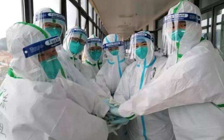

战"疫"必胜
首页
关于新冠
抗疫英雄
如何防疫
大国战疫
什么是新冠病毒?
冠状病毒属于套式病毒目、冠状病毒科、冠状病毒属，是一类具有囊膜、基因组为线性单股正链的RNA病毒，是自然界广泛存在的一.大类病毒。病毒基因组5'端具有甲基化的帽状结构，3' 端具有poly(A)尾，基因组全长27~32kb,是目前已知RNA病毒中基因组最大的病毒。
冠状病毒仅感染脊椎动物，与人和动物的多种疾病有关，可引起人和动物呼吸系统、消化系统和神经系统疾病。
新型冠状病毒引起的新型冠状病毒肺炎，其传播途径主要是呼吸道途径以及密切接触传播。目前又分为直接传播，主要是患者打喷嚏、流鼻涕、咳嗽、说话出的飞沫以及呼出的气体，近距离接触到其他健康人员，使其吸入到气道内而导致感染。另外飞沫会混合在空气中而形成气溶胶，在密闭环境中会被健康人群吸入后会导致感染。飞沫沉积在物品的表面，健康人群接触污染的手臂后，再接触自己的口腔、鼻腔、眼球等黏膜处，也会被吸收导致感染到新型冠状病毒。
抗疫英雄
查看更多+
钟南山/中国工程院院士
广州医科大学附属第一医院国家呼吸系统疾病临床医学研究中心主任。
人物简介：
钟南山长期从事呼吸内科的医疗,教学,科研工作。重点开展哮喘,慢阻肺疾病,呼吸衰竭和呼吸系统常见疾病的规范化诊疗,疑难病,少见病和呼吸危重症监护与救治等方面的研究。
从非典到新冠肺炎，钟南山一直站在抗疫一线，成为公共卫生事件应急体系建设的推动者，促成了国家多项政策法规的制定，更成为突发公共卫生事件的代言人，成为稳定民心的科学家代表。
李兰娟/中国工程院院士
传染病诊治国家重点实验室主任。
人物简介：
李兰娟从事传染病临床,科研和教学工作40余年,擅长各类肝炎,感染性疾病,新发突发传染病诊治,尤其是肝衰竭,病毒性肝炎,肝病微生态研究。
李兰娟作为中国人工肝的开拓者，她创建独特有效的人工肝支持系统治疗重型肝炎获重大突破。首次提出感染微生态学理论，从微生态角度来审视感染的发生、发展和结局，为感染防治提供了崭新的思路。
李文亮
武汉市中心医院眼科医生。
人物简介：
中共党员，硕士研究生学历，生前为湖北省武汉市中心医院眼科主治医师。作为眼科医生，他不惧危险，勇于近距离接触患者。
2019年12月30日，向外界发出防护预警，而被称为疫情“吹哨人。2020年1月上旬，他在工作中不幸感染新冠肺炎，住院期间也始终牵挂着抗疫一线，多次表示“恢复以后还要上一线”。
张文宏
复旦大学附属华山医院感染科主任。
人物简介：
张文宏主要研究疑难感染性疾病与肝病的诊断与治疗，包括发热待查、疑难感染性疾病的病因诊断、疑难肝病的病因诊断、慢性病毒性肝炎的长期治疗与临床治愈，以及结核性脑膜炎与耐药结核等疑难结核病的诊治等。
造福人类，护佑安全，是他的使命担当，也是宏图大愿。脚踏实地，做一名充满仁爱之心的良医，是张文宏矢志不渝的初心。
防疫小贴士
1
勤开窗 多通风
疫情期间,要勤开窗通风
让室内能够
进入新鲜空气就好。
2
勤洗手 多消毒
洗手要用肥皂和水龙头的水
酒精消毒防范于未然
3
出门时 戴口罩
出门一定戴口罩
和人说话要保持距离
这样对你我都好
4
勤消毒 勤清洁
物品表面可用75%酒精或
消毒液进行擦拭
或喷雾消毒
如: 门把手, 水龙头, 手机等...
查看更多+
大国战疫
一方有难,八方支援。中华儿女众志成城,共克时艰。 防治结合,科学防疫,消除恐慌,理性应对
做好个人防护,勤洗手,多饮水,不聚众,公共交通上面尽量减少与他人交流,与乘者尽量保持距离
限制人流数量,针对不同地区,有针对的慢慢地恢复营业,上班或者读书期间,错峰就餐
